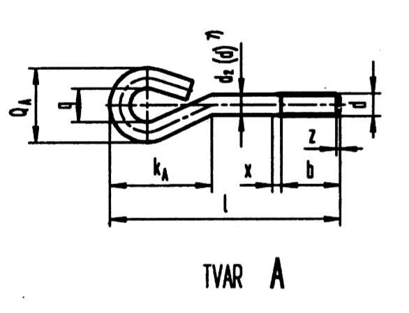
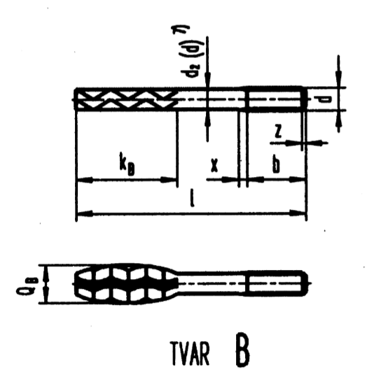
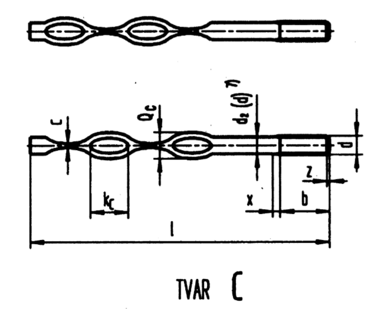
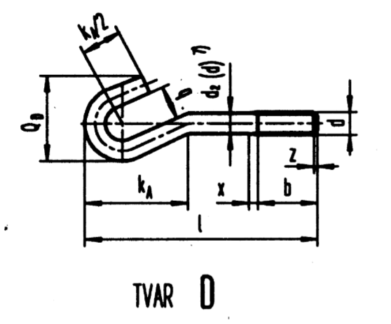

 |
 |
 |
 |
Příklad označení šroubu do zdiva nebo do základů se závitem M20 délky l=160 mm:
ŠROUB A M20×160 ČSN 02 1391
| Závit d | M8 | M10 | M12 | M16 | M20 | M24 | M30 | M36×3 | M42×3 | M48×3 | M56×4 |
|---|---|---|---|---|---|---|---|---|---|---|---|
| b | 22 | 26 | 30 | – | – | – | – | – | – | – | – |
| 18 | 32 | 36 | 44 | 52 | – | – | – | – | – | – | |
| 41 | 45 | 49 | 57 | 65 | 73 | 85 | 97 | 109 | 121 | 145 | |
| kA≈ | 36 | 45 | 55 | 72 | 90 | 108 | 140 | 172 | 206 | 240 | 278 |
| qmin. | 12 | 15 | 18 | 22 | 28 | 32 | 40 | 50 | 63 | 70 | 80 |
| QA max. | 28 | 35 | 42 | 54 | 68 | 80 | 100 | 122 | 147 | 166 | 192 |
| kB≈ | – | – | – | 90 | 105 | 130 | 150 | 170 | – | – | – |
| QB max. | – | – | – | 30 | 36 | 48 | 60 | 72 | – | – | – |
| kC≈ | 32 | 36 | 38 | 40 | – | – | – | 162 | 176 | 186 | 194 |
| QC max. | 15 | 18 | 24 | 30 | – | – | – | 70 | 75 | 85 | 90 |
| cmin. | 3 | 4 | 5 | 6 | – | – | – | 14 | 16 | 18 | 19 |
| QD max. | 35 | 43 | 52 | 66 | 83 | 110 | 124 | 166 | 180 | 205 | 238 |
| Závit d | M8 | M10 | M12 | M16 | M20 | M24 | M30 | M36×3 | M42×3 | M48×3 | M56×4 |
|---|---|---|---|---|---|---|---|---|---|---|---|
| Délka l | Přibližná hmotnost šroubu [g] | Přibližná hmotnost šroubu [kg] | |||||||||
| 80 | 35 | ||||||||||
| 100 | 100 | 68 | |||||||||
| 120 | 47 | 78 | 120 | ||||||||
| 160 | 66 | 98 | 148 | 295 | 0,52 | ||||||
| 200 | 72 | 117 | 177 | 348 | 0,61 | ||||||
| 250 | 87 | 141 | 212 | 414 | 0,71 | 1,07 | |||||
| 320 | 262 | 507 | 0,86 | 1,29 | 2,11 | ||||||
| 400 | 318 | 613 | 1,02 | 1,53 | 2,50 | 3,93 | |||||
| 500 | 745 | 1,23 | 1,83 | 2,98 | 4,64 | 6,79 | |||||
| 630 | 1,51 | 2,23 | 3,61 | 5,57 | 8,07 | 11,02 | |||||
| 800 | 1,87 | 2,75 | 4,43 | 6,78 | 9,75 | 13,24 | 18,41 | ||||
| 1000 | 3,36 | 5,40 | 8,60 | 11,67 | 15,85 | 21,94 | |||||
| 1250 | 4,12 | 6,61 | 9,99 | 14,19 | 19,11 | 26,35 | |||||
| 1600 | 8,30 | 12,48 | 17,64 | 23,68 | 32,52 | ||||||
| 2000 | 15,33 | 21,59 | 28,90 | 39,58 | |||||||
| 2500 | 26,52 | 35,42 | 48,41 | ||||||||
| 3200 | 44,55 | 60,80 | |||||||||
| Závit d | M16 | M20 | M24 | M30 | M36×3 |
|---|---|---|---|---|---|
| Délka l | Přibližná hmotnost šroubu [g] | ||||
| 80 | |||||
| 100 | |||||
| 120 | |||||
| 160 | 0,20 | 0,30 | |||
| 200 | 0,25 | 0,39 | 0,56 | ||
| 250 | 0,32 | 0,49 | 0,71 | 1,16 | |
| 320 | 0,41 | 0,63 | 0,93 | 1,52 | 2,17 |
| 400 | 0,52 | 0,80 | 1,17 | 1,94 | 2,74 |
| 500 | 0,65 | 1,00 | 1,49 | 2,45 | 3,46 |
| 630 | 1,26 | 1,88 | 3,12 | 4,38 | |
| 800 | 1,61 | 2,39 | 4,00 | 5,60 | |
| 1000 | 3,00 | 5,03 | 7,02 | ||
| 1250 | 3,79 | 6,32 | 8,45 | ||
| 1600 | 8,13 | 11,30 | |||
| 2000 | 10,19 | 14,15 | |||
| Závit d | M8 | M10 | M12 | M16 | M36×3 | M42×3 | M48×3 | M52×3 |
|---|---|---|---|---|---|---|---|---|
| Délka l | Počet zploštění / přibližná hmotnost šroubu [g] | Počet zploštění / přibližná hmotnost šroubu [kg] | ||||||
| 80 | 1/23 | |||||||
| 100 | 1/29 | 1/45 | ||||||
| 120 | 1/35 | 1/54 | 1/78 | |||||
| 160 | 2/47 | 1/77 | 1/106 | 1/196 | ||||
| 200 | 2/60 | 2/93 | 2/133 | 2/145 | ||||
| 250 | 2/116 | 2/175 | 2/311 | |||||
| 320 | 2/225 | 2/404 | 1/2,07 | 1/2,94 | ||||
| 400 | 2/274 | 2/510 | 1/2,64 | 1/3,75 | 1/4,76 | |||
| 500 | 2/642 | 2/3,35 | 1/4,76 | 1/6,06 | 1/7,31 | |||
| 630 | 2/3,56 | 1/5,06 | 1/7,63 | 1/9,20 | ||||
| 800 | 2/5,27 | 2/7,49 | 2/9,98 | 2/12,03 | ||||
| 1000 | 3/6,49 | 3/9,21 | 3/12,13 | 3/14,62 | ||||
| 1250 | 4/8,20 | 4/11,64 | 4/15,00 | 4/18,08 | ||||
| 1600 | 4/10,69 | 4/15,18 | 4/20,87 | 4/25,16 | ||||
| 2000 | 4/13,54 | 4/19,23 | 4/24,79 | 4/29,87 | ||||
| 2500 | 4/17,11 | 4/24,60 | 4/31,31 | 4/37,73 | ||||
| 3200 | 4/41,10 | 4/49,53 | ||||||